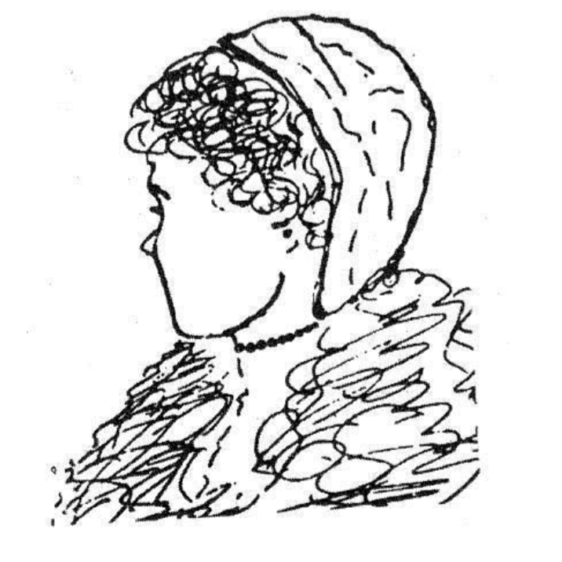
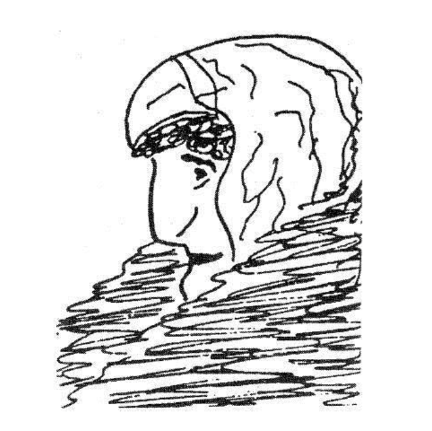
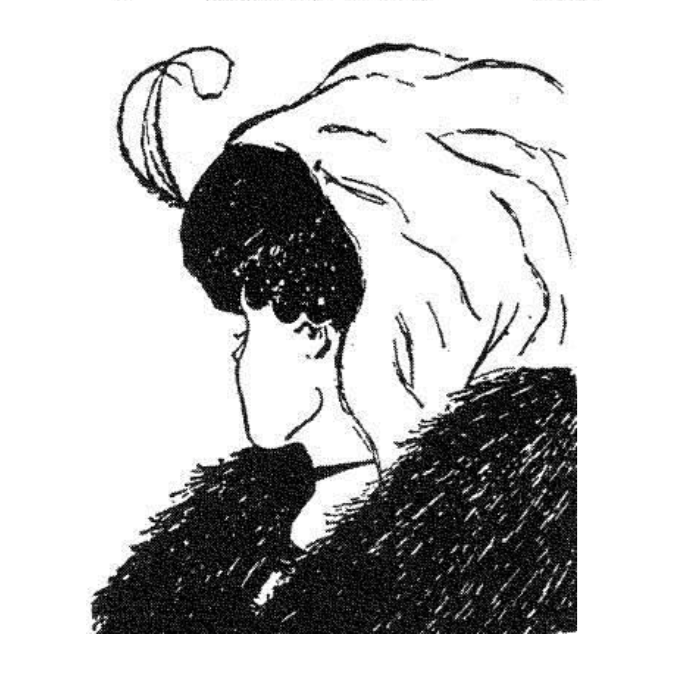
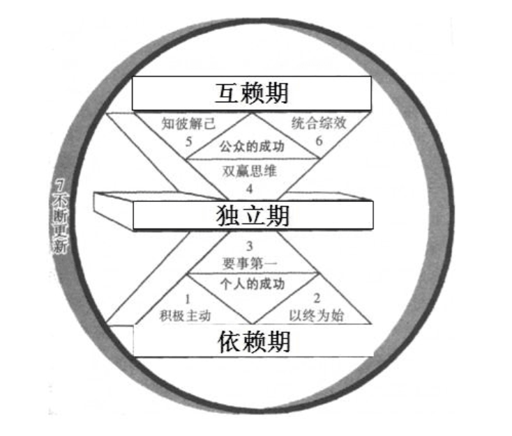
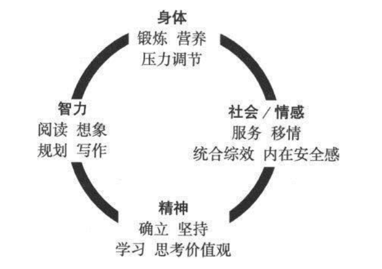
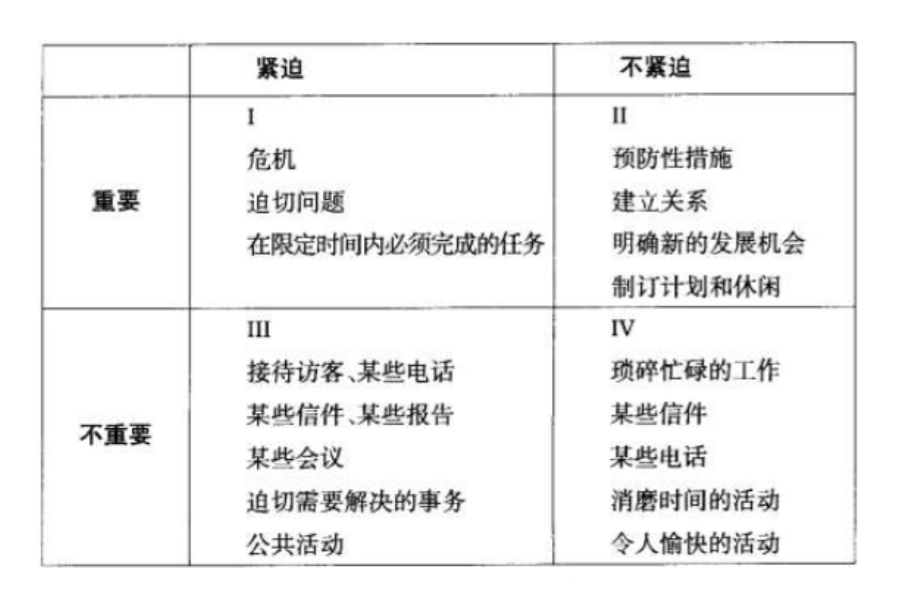
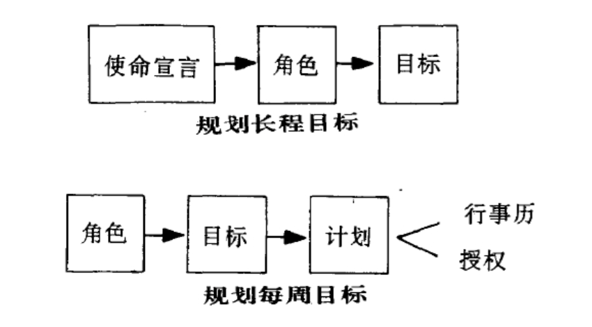
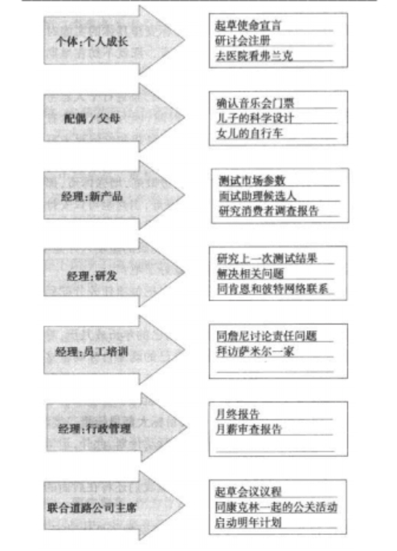
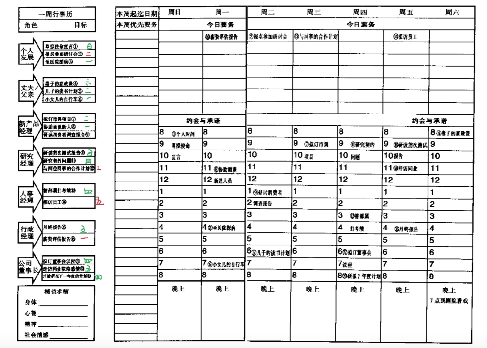
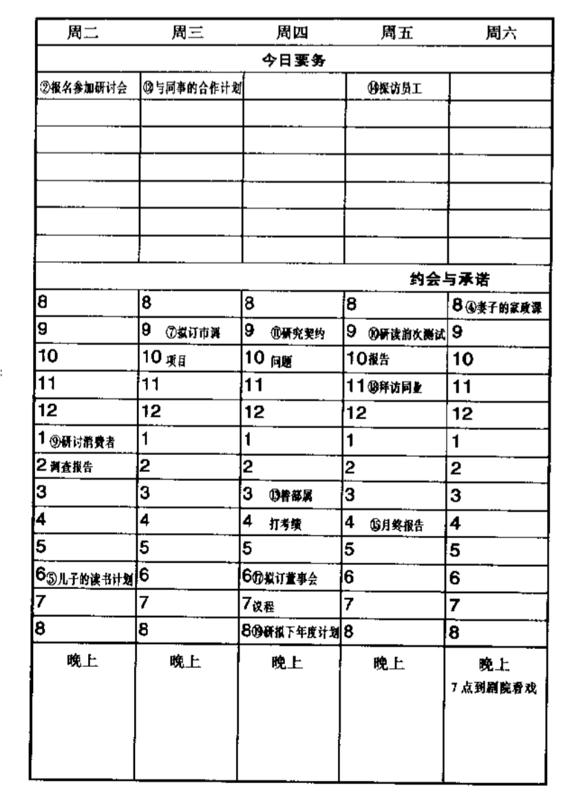

高效能人士的七个习惯读后感
没有正确的生活，就没有真正卓越的人生——戴维.斯塔.乔丹
思维定式的影响
1 | 先前形成的知识、经验和习惯，都会使人们形成认知的固定倾向，从而影响后来的分析、判断，形成“思维定势”。 |
我们的思维定式，无论正确与否，是我们的态度与行为的根本，归根到底，是我们的人际关系的根本。 ——史蒂芬·柯维



条件作用对人类认识和思维定式的强大影响。
思维定式是行为和态度的源头，脱离了这个源头言行就是表里不一，言不由衷。
我们总以为自己清楚而客观的看到了事物的本质，其实这个实验却像我们证明了，别人的观点虽有差异，但也是清楚而客观的。“立场决定观点”。
每个人都是在自己的思维定式中生活的，而且根深蒂固；因此如果自己的思维定式得到了提升，可以使我们生活得更好。
高效能人士的七个习惯

个人的成功：从依赖到独立
- 积极主动
- 以始为终
- 要事第一
公众的成功：从独立到互赖
- 双赢思维
- 知己知彼
- 统合综效
全面关照生命
- 不断更新

要事第一
1 | 有效的管理是把握重点的管理，它把重要的事情放在第一位。由领导决定什么是重点后，再靠自制力来掌握重点，时刻把它们放在第一位，以免被感觉、情绪或冲动所左右。 |
- 你目前的生活中，有哪些事能够彻底使你的个人生活得到改观，但是你却一直没有做？
- 你目前的生活中，有哪些事能够彻底使你的工作局面得到改观，但是你却一直没有做？
是什么
习惯一告诉你：“你是创造者，你掌控自己的人生。”习惯一是的基础是人类持有的四大天赋（想象力、良知、独立意志和自我意思）。
习惯二是关于第一次的创造或者是智力上创造的习惯，其原则的基础是想象力和良知这两大天赋。
习惯三是关于第二次的创造或者体力上创造的习惯，它是是习惯一、二的具体实践、执行和自然流露。它要求我们运用独立意志的努力实现一个目标，即以原则为基础安排人生。
为什么
重要之事不可受芝麻小事牵绊——歌德
《成功的普遍共性》一文的作者格雷一直致力于研究所有成功人士身上的普遍共性。他发现成功的决定因素并非辛勤的工作、不凡的运气和良好的人际关系，
虽然这些因素对于一个人的成功有举足轻重的影响，但是都比不上另外一个更加重要的因素，那就是习惯三“要事第一”。格雷说：“成功者能为失败者所不能，
纵使并非心甘情愿，但是为了理想和目标，仍可以凭毅力克服心理障碍。”例子
1
2
3
4
5
6
7
8
9
10在美国一个城市，火灾事故特别多，也特别严重，所以消防员的责任很重大，居民认为消防员的职责就是要灭火，第一时间出现，就要火速赶到去灭火，
保证人员案安全和财产安全。所有的居民都认为当有火情出现的时候，人们打了999，消防员就要第一时间到过现场进行救援。
由于消防队员工作强度很大，有时会因此而延误救灾。长此以往消防员遭到居民的不满和投诉，可谓是吃力不讨好。
后来消防员队长为了改变这个困境，想到了一个办法。他要求消防员除了做日常的火灾救援外，还花了很多的时间，到街道、商铺、工厂、酒店、公交、
火车站等地方进行火灾安全检查，检查防火设备，排除安全隐患，排查安全出口等等，并且不断地教育人们如何才能够预防消防安全，发生火灾要如何自救等等。
虽然工作量没有减少还增多了，而且人们都认为，消防员的职责就是灭火救援，而不是做这些没用的工作。即使顶着巨大的不理解，消防对员还是坚持做这个。
过了很长一段时间，这个地区火灾次数渐渐地减少了，人们防火意识也越来越普及了。消防员的救灾工作也减轻了，他们的主要工作变成了安全隐患排查和人们消防意识的教育。
怎么做
- 时间管理
- 1 第一代理论着重利用便条与备忘录，在忙碌中调配时间与精力。
1.2 第二代理论强调行事历与日程表，反映出时间管理已注意到规划未来的重要。
1.3 第三代是目前正流行、讲求优先顺序的观念。也就是依据轻重缓急设定短、中、长程目标，再逐日订定实现目标的计划，将有限的时间、精力加以分配，争取最高的效率。
1.4 第四代与以往截然不同之处在于，它根本否定“时间管理”这个名词，主张关键不在于时间管理，而在于个人管理。与其着重于时间与事务的安排，不如把重心放在维持产出与产能的平衡上。

- 勇于说不
1
若要专注于要务，就得排除次要事物的牵绊，此时需要有说“不”的勇气。总的来说就是：人的精力是有限的，要知道取舍。
讲个故事
1 | 某著名教授在上课之前让同学们搬了一些看起来莫名其妙的东西，其中，有一盘大石块，一盘小石块，一盘大沙子，一盘小沙子，一大盆水，一个大大的透明玻璃杯。 |
很多人能够掌握重点，也有自制力，却不是以原则为中心，又缺少个人使命宣言，由于欠缺适当的指引，无法形成思维定式，做不到要事第一。
- 自我管理的四个步骤
如何将事务进行轻重缓急分级，再以原则为中心一步一步实施起来呢？

3.1 确认角色
1 | 第一步就是写出自己的关键角色，避免错失要事。 |

3.2 选择目标
1 | 第二步就是思考下一个周计划中每一任务栏下你最想做的一两件要事,作为你选定的目标。 |

3.3 安排进度
1 | 第三步是为每一项目标安排具体的实施时间。 |

这种以周为单位、以第二类事务为中心的日程表不仅能让你做到“要事第一”，还能让你有充分的自由和灵活性以应付突发事件，让你在必要的时候改动约会时间，让你从事一些联络感情和与他
人交往的活动，让你享受到自发的乐趣。你会感觉很踏实，因为你知道自己已经安排好了一周的要务，照顾到了工作生活中的每一个重要领域。
3.4 每日调整
1 | 使用这种以第二类事务为中心的周计划之后，你就会发现原来的每日计划变成了每日调整，即根据突发事件、人际关系的意外发展及崭新机会对每天的要务安排进行适当调整。 |
- 付诸实践
对人不可讲效率，对事才可如此。对人应讲效用——即某一行为是否有效。 - 1 高效能的秘诀——授权
1
授权是提高效能或效能的秘诀之一，可惜一般人多吝于授权，总觉得不如靠自己更省时省事。
- 1.1 指令型授权
- 1.2 责任型授权
1
责任型授权的关注重点是最终的结果。它给人们自由，允许自行选择做事的具体方法，并为最终的结果负责。
- 2 预期的成果
1
双方都要明确并且完全理解最终想要的结果。要以“结果”，而不是以“方法”为中心。要投入时间，有耐心，详细地描述最终的结果。具体的日程，明确截止期限。
4.3 指导方针
1 | 确认适用的评估标准，避免成为指令型授权，但是一定要有明确的限制性规定。事先告知对方可能出现的难题与障碍，避免无谓的摸索，但是不要告诉他们要做什么。要让他们自己为最后的结果负责。 |
4.4 责任的归属
1 | 制定业绩标准，并用这些标准来评估他们的成果。制订具体的时间表，说明何时提交业绩报告，何时进行评估。 |
4.5 明确的奖励
1 | 明确地告诉他们评估可能导致的结果，好的和不好的后果都要告诉他们。其具体内容应该包括财务奖励、精神奖励、职务调整以及该项工作对其所在组织的使命的影响。 |
总结
谁也无法说服他人改变，因为我们每个人都守着一扇只能从内开启的改变之门，不论动之以情或晓之以理，我们都不能替别人开门。——弗格森
倘若你已经决定打开“改变之门”，接纳七个习惯所阐述的观念，那么你会迎来一个崭新的生活。
- 引言
- 思维定式的影响
- 高效能人士的七个习惯
- 1 个人的成功：从依赖到独立
- 1.1 要事第一
- 是什么
- 为什么
- 怎么做